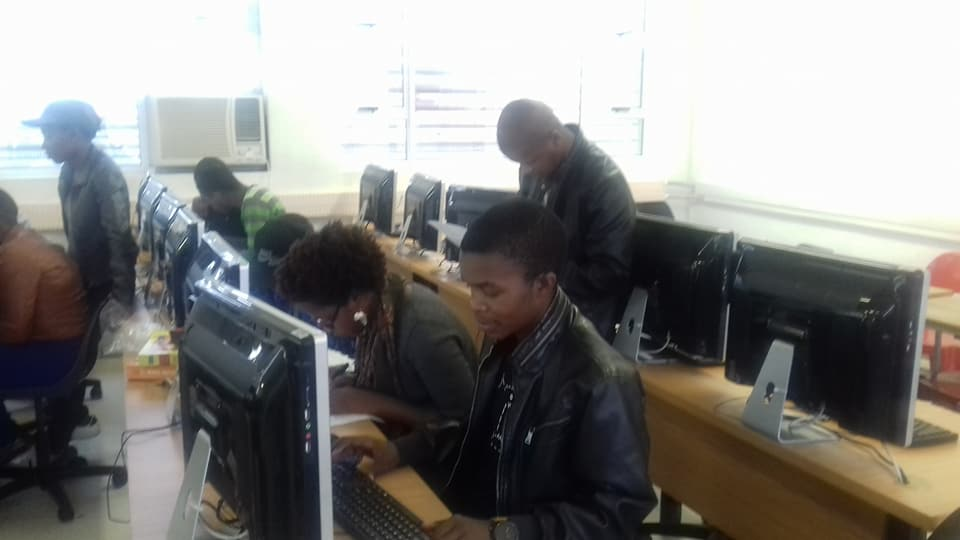

<!--
  Generated template for the DataPage page.

  See http://ionicframework.com/docs/components/#navigation for more info on
  Ionic pages and navigation.
-->

<ion-content padding>
  <div align="center" class="main" >
      <div align="center"   class="image-hearder" >
          

        </div>
<div  align="center" class="head" >
  <h1> Welcome {{Surname}} {{Name}}</h1>
  <h2>To</h2>
  <h2 class="h2"> We Code Society </h2>
</div>
<ion-card class="card" >
  
  <div class="card-title">IT Scholars</div>
  <div class="card-subtitle">Walter Sisulu University</div>

</ion-card>

<div align="center" class="paragraph" >
<div class="About-us" align="center" >
  <h3 (click)="AboutUs()" >About Us</h3>
  

</div>
<p>We empower rural arear learners about IT field specifically the programmming world.
  Early Age Development in the IT industry.
  Bring solutions to the lack of knowledge on applaying at an early stage when you want to further student towards any field.


</p>

<!-- <p>We code society is an NGO program is a newly found program. 
  was found by one of WSU Students and graduate to help the community
   more especially Mtata Learners and sorrounding arears about what is
    really happening at university and workong industry in the field of IT. 
   We have Programms were we give them foundation of Computer Literacy 
   Skills and programming skills.   </p> -->
</div>
</div>
  

</ion-content>
